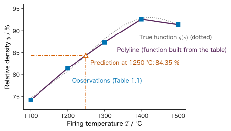
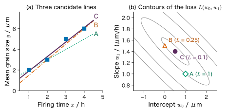
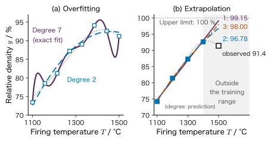

Chapter 1What Is Machine Learning? — Learning Rules from Data
- What does it mean, concretely, to “learn from data” instead of having a person write the rules: what is decided, and what is made small?
- If we have only five measured pairs of firing temperature and relative density, can machine learning predict the result at 1250 °C? What about 1600 °C?
- Which tasks in materials research can machine learning take on, and which can it not?
When alumina powder is shaped and fired, the higher the firing temperature, the denser the result. Suppose a lab record lists the relative densities of five samples fired every 100 °C from 1100 °C to 1500 °C. If we can build from these five pairs of numbers a “function that takes a temperature and returns a density,” we can say something reasonable about the result at 1250 °C, a temperature that has not yet been fired. There is also the route of setting up an equation from sintering theory, but in many situations the theory is too complicated, or it is unclear which factors are actually at work. In such cases, leaving the task of building a function from pairs of numbers to a computer, following a fixed procedure, is machine learning.
This chapter is the entrance to the whole book. First, we divide the tasks that machine learning takes on into five, regression, classification, density estimation, latent representations, and generation, and for each we look at the input, the output, and what is learned, using small numerical examples and figures. Next, we fix the common vocabulary of model, parameters, loss, learning, and prediction by a hand calculation that fits a line to four points. On that basis, we preview the relationship among the three pillars of this book (Bayesian inference, Bayesian optimization, and neural networks), the characteristics of materials data, and the typical ways things go wrong (overfitting, data leakage, and extrapolation), and finally we present the map of this book and the two ways to read it. There are few equations, but please follow the calculation in Section 1.4 with pencil in hand.
- You can explain that “learning from data” means choosing the form of a model, finding the parameters that minimize the loss, and using the result to predict the output for a new input.
- You can sort a materials problem into regression, classification, density estimation, latent representations (clustering and dimensionality reduction), or generation.
- You can explain the differences among supervised learning, unsupervised learning, and self-supervised learning in terms of whether the data carry labels.
- You can compute by hand the sum-of-squares loss of a line model, and find the intercept and slope that minimize the loss from a system of two linear equations in two unknowns.
- You can state in a single sentence how the roles of Bayesian inference, Bayesian optimization, and neural networks differ.
- You can explain with a small numerical example what overfitting, data leakage, and extrapolation mean.
Sections for the introductory route: 1.1, 1.2, 1.3, 1.4, 1.5, 1.6, 1.7, 1.8, 1.11. Sections marked “Detailed Route” may be skipped on a first reading.
1.1 Learning from Data Instead of Writing Rules
1.1.1 Two approaches
The traditional way to make a computer do a job is for a person to write rules. As in “pass if the firing temperature is 1300 °C or higher” or “if the peak position is near 2θ = 25.3°, it is anatase,” a person devises the procedure that determines the output from the input and turns it into a program. When the rules are clear, this is the most reliable approach.
However, for objects such as material properties, where many factors are intertwined, a person often cannot write down the correct rules. So we reverse the idea. We collect many pairs of inputs and outputs (the data), and have the computer search for a function that reproduces those pairs as well as possible. A person decides the range to search in (the form of the function) and the yardstick for “reproduces well” (the loss), but the concrete coefficients are determined by the data. This is what is meant by learning from data: the resulting function is called a model, and the work of determining its coefficients is called learning (also called training) (Figure 1.1).
1.1.2 Building a function from a table of five pairs
Let us think with concrete numbers. Table 1.1 gives the relative density $y$ (as a percentage of the theoretical density) of five samples fired at different firing temperatures $T$. These are not real measured values; they were made from “Data A,” the synthetic data for teaching purposes that we use repeatedly in this book. In Data A, the temperature is normalized as $s=(T-1300\ ^{\circ}\mathrm{C})/(200\ ^{\circ}\mathrm{C})$ ($T=1100$–$1500$ °C corresponds to $s=-1$ to $1$), and the observed values are produced by adding an error following a Gaussian distribution with mean 0 and standard deviation 1.0 % to the true function
\begin{equation} \begin{aligned} g(s)&=88+8s-5s^{2}\\ &\quad+2\sin 3s\quad(\%) \end{aligned} \label{eq:1-dataA} \end{equation}(the argument of $\sin$ is in radians). Table 1.1 uses the five points $s=-1,-0.5,0,0.5,1$; the random numbers were generated with Python’s numpy.random.default_rng(20261116), and the values were rounded to 0.1 %. The setting is that only the person who made the data knows the true function, while the learner can see only the five pairs in the table.
| Sample | Firing temperature $T$ / °C | Normalized temperature $s$ | Relative density $y$ / % | (For reference) true value $g(s)$ / % |
|---|---|---|---|---|
| 1 | 1100 | $-1.0$ | 74.2 | 74.72 |
| 2 | 1200 | $-0.5$ | 81.4 | 80.76 |
| 3 | 1300 | $0.0$ | 87.3 | 88.00 |
| 4 | 1400 | $0.5$ | 92.6 | 92.75 |
| 5 | 1500 | $1.0$ | 91.4 | 91.28 |
The most naive way to build a “function that takes a temperature and returns a density” from this table is to connect neighboring points with straight lines (linear interpolation) (Figure 1.2). This is still a perfectly good “function built from data,” and it can answer for 1250 °C, which is not in the table. On the other hand, it was a person who decided how to build it (“connect neighbors with straight lines”), and that way of building it contains an assumption (“between neighboring points the density changes linearly”). Every method in machine learning has these two things: a way of building a function and the assumptions it contains. When you learn a method in later chapters, please always ask “what is being assumed?”

Example 1.1: Predicting the relative density at 1250 °C from the table
Using the method of connecting two neighboring points of Table 1.1 with a straight line, predict the relative density at (1) 1250 °C and (2) 1450 °C. (3) Compute the true function values $g(-0.25)$ and $g(0.75)$ from Eq. \eqref{eq:1-dataA}, and compare them with the predictions.
Solution. (1) Since 1250 °C is exactly midway between 1200 °C (81.4 %) and 1300 °C (87.3 %),
$$ \begin{aligned} \hat{y}(1250)&=81.4+(87.3-81.4)\\ &\quad\times\frac{1250-1200}{1300-1200}\\ &=81.4+5.9\times0.5=84.35\ \%. \end{aligned} $$(2) Similarly, since 1450 °C is midway between 1400 °C (92.6 %) and 1500 °C (91.4 %), $\hat{y}(1450)=92.6+(91.4-92.6)\times0.5$ $=92.0\ \%$.
(3) At $s=-0.25$, $8s=-2$, $-5s^{2}=-0.3125$, and $2\sin(-0.75)=2\times(-0.6816)=-1.3633$, so $g(-0.25)=88-2-0.3125-1.3633$ $=84.32\ \%$. At $s=0.75$, $8s=6$, $-5s^{2}=-2.8125$, and $2\sin 2.25=2\times0.7781=1.5562$, so $g(0.75)=92.74\ \%$.
The prediction at 1250 °C nearly agrees with the true value (a difference of 0.03 %). The prediction at 1450 °C missed by 0.74 %, on the low side. This is because the true function forms a peak between 1400 and 1500 °C, whereas the piecewise linear function simply connects the two points with a straight line. Moreover, the observed values at the two ends themselves carry errors (standard deviation 1.0 %), so a miss of this size is unavoidable. The good agreement at 1250 °C is also partly because the errors happened to cancel out.
All the elements of machine learning appear in this small example: data (five pairs), model (the piecewise linear function), prediction (84.35 %), error (the scatter that rides on the observations), and assumption (between points the function is a straight line). However, the piecewise linear function has no stage of “adjusting coefficients to fit the data.” In Section 1.4 we treat learning in the proper sense, in which the coefficients are determined by minimizing a loss.
1.2 The Five Tasks of Machine Learning — Regression, Classification, Density Estimation, Latent Representations, and Generation
1.2.1 Dividing the tasks by input and output
There are many machine learning methods, but the picture becomes clearer if we sort them by the task they take on. In this book we divide them into the following five (Table 1.2, Figure 1.3).
- Regression: predict a continuous numerical value $y$ from an input $\bm{x}$. Example: relative density from firing temperature.
- Classification: predict which of a finite number of kinds (classes) an input $\bm{x}$ belongs to. Example: “single phase or multiphase?” from the firing conditions.
- Density estimation: estimate what probability distribution the data $\bm{x}$ follow. Example: from the distribution of the variability in relative density, estimate the fraction of defective products, those with a relative density below 94 %.
- Latent representation: find a small number of unseen variables (latent variables) behind the many observed variables. If the latent variable is discrete, this becomes clustering (dividing the data into several groups); if it is continuous, it becomes dimensionality reduction (representing the data with fewer variables).
- Generation: create new examples from a learned distribution. Example: learn the distribution of the compositions of known materials and propose plausible new compositions. GPT, which produces text one word at a time, is also doing this task.
Regression and classification are both tasks of “predicting an output from an input”; they differ only in whether the output is a number or a kind. Most practical uses of machine learning are these two, and they are the center of Chapters 8–15 of this book as well. Moreover, both regression and classification can ultimately be regarded as “estimating the distribution $p(y\mid\bm{x})$ of the output given the input” (this meaning becomes clear once we study conditional distributions in Chapter 2). In other words, estimation (determining distributions and coefficients from data) and classification are the two pillars of this book, and the remaining tasks are built on top of these two.
| Task | Input → output (what is learned) | Examples in materials |
|---|---|---|
| Regression (Chapters 8, 12, 14) | $\bm{x}$ → number $y$ (function $f(\bm{x};\bm{w})$) | firing temperature → relative density, composition → band gap |
| Classification (Chapters 9–11, 14) | $\bm{x}$ → class (decision boundary, class probabilities) | firing conditions → single phase / multiphase, microstructure photograph → defect present / absent |
| Density estimation (Chapters 3, 4, 17) | none → distribution $p(\bm{x})$ (shape and parameters of the distribution) | variability in strength → fracture probability, relative density → defect rate |
| Latent representation (Chapters 17, 18) | multivariate $\bm{x}$ → group number, a few coordinates $\bm{z}$ (group centers, principal directions) | grouping of XRD patterns, summarizing many descriptors |
| Generation (Chapters 21, 26) | none (or a condition) → new $\bm{x}$ (the distribution, and the procedure for drawing from it) | plausible candidate compositions and structures, text |
![Six small graphs. (a) Regression: a curve fitted to points of firing temperature versus relative density. (b) Classification: single-phase points and multiphase points in the plane of firing temperature and holding time, separated by a dashed straight line. (c) Density estimation: a Gaussian distribution curve overlaid on a histogram of relative density, with the part below 94 % shaded. (d) Clustering: points in the plane of grain size and hardness divided into two groups, with the group centers marked by ×. (e) Dimensionality reduction: a line drawn along the direction of maximum variability through points of two descriptors, with the projection from each point shown by thin lines. (f) Generation: points newly generated from the distribution estimated from the points in (e), overlaid as diamonds.](figs/ch01_fig1-3.svg)
| Panel | Data and seed | Result of learning |
|---|---|---|
| (a) | Data A (Eq. \eqref{eq:1-dataA}), 12 equally spaced points, standard deviation of the error 1.0 %. seed 20261103 | A cubic polynomial was fitted by least squares |
| (b) | 40 points with $T$ uniformly random on $[1100,1500]$ °C and $t$ uniformly random on $[1,10]$ h. With $u_1=(T-1300)/200$ and $u_2=(t-5.5)/4.5$, random labels were assigned with the single-phase probability $1/\{1+\exp[-4(u_1+u_2)]\}$. seed 20261104 | Straight-line boundary from logistic regression (Chapter 9). Accuracy on the training data 36/40 |
| (c) | 40 relative densities from a Gaussian distribution with mean 95.0 % and standard deviation 0.8 %. seed 20261105 | Estimated mean 95.02 % and standard deviation 0.835 %. Probability of being below 94 %: 0.111 (actually 4/40) |
| (d) | Two groups × 20 points. Group 1: grain size 2.0±0.5 μm, hardness 1600±60 HV. Group 2: grain size 5.0±0.7 μm, hardness 1350±70 HV (± is the standard deviation of a Gaussian distribution). seed 20261106 | Standardization followed by k-means ($K=2$; Chapter 17). The centers are (2.05 μm, 1577 HV) and (4.92 μm, 1340 HV) |
| (e) | Two standardized descriptors, 30 points, from a bivariate Gaussian distribution with mean 0, variance 1, and correlation coefficient 0.85. seed 20261107 | Principal component analysis (Chapter 18). A single axis explains 93.7 % of the total variance |
| (f) | 30 new points from the bivariate Gaussian distribution estimated from the 30 points in (e). seed 20261108 | — |
Comparing (c) and (f) of Figure 1.3 shows the relationship between density estimation and generation. In (c) we estimated a distribution and used it to compute a probability, as in “the probability of being below 94 % is 0.111.” In (f) we drew samples from the estimated distribution to create new points. Once the distribution is known, generation is possible, and generating well is one piece of evidence that the distribution has been learned well. However, if the estimated distribution is too simple (here, a Gaussian distribution), the generated points will be simple too. A large language model is what results from learning this “distribution” for an extremely complicated object, namely text (Chapter 26).
Both (d) and (e) find structure in a collection of unlabeled points. In (d) we assumed a discrete latent variable, “each point came from one of two groups,” and in (e) a continuous latent variable, “the two descriptors are almost determined by a single quantity $z$.” In both cases the output is a “way of viewing the data,” and they differ from regression and classification in that it is difficult to evaluate them by checking against correct answers.
Example 1.2: Dividing materials problems into the five tasks
Which of regression, classification, density estimation, latent representation (clustering or dimensionality reduction), and generation does each of (1)–(6) below correspond to? Also state the input and the output.
(1) Predict the yield strength (MPa) from the composition of an alloy (the fraction of each element).
(2) From a microstructure photograph taken with a scanning electron microscope, decide whether the sample has a crack or not.
(3) From the bending strengths of 30 test specimens made under the same conditions, estimate the probability that the strength falls below 300 MPa.
(4) Divide the XRD patterns of 500 samples into groups of similar ones (neither the number nor the kinds of groups are known in advance).
(5) Summarize an XRD pattern consisting of 2000 intensity points per sample with two or three numbers, and draw it as a scatter plot.
(6) Learn the compositions of known stable oxides and create 100 plausible candidate compositions that have not yet been reported.
Solution. (1) Regression. The input is the vector of the composition, and the output is a number (the yield strength). (2) Classification. The input is an image (a vector formed by lining up the pixel values), and the output is one of two classes (crack present / absent). (3) Density estimation. There is no input; we estimate the distribution of strength $p(\text{strength})$ from the 30 strength values and compute the area at or below 300 MPa (in ceramics the Weibull distribution is often used; Chapter 3). (4) Clustering, within latent representation. The output is the group number of each sample. No correct labels are given. (5) Dimensionality reduction, within latent representation. A 2000-dimensional vector is mapped to coordinates $\bm{z}$ in two or three dimensions. (6) Generation. Learn the distribution of compositions and draw new compositions from it. Note, however, that whether the generated candidates are really stable must be checked separately by calculation or experiment.
1.3 Supervised, Unsupervised, and Self-Supervised Learning
1.3.1 With labels, without labels, or labels made from the data
The five tasks of Section 1.2 were divided according to “what is output.” Another way of dividing them depends on what information accompanies the data used for learning (Figure 1.4).
- Supervised learning: we learn from pairs $\{(\bm{x}_n,y_n)\}_{n=1}^{N}$ of an input $\bm{x}_n$ and the correct output for it (the target value, also called the teacher signal or label) $y_n$. Regression and classification belong here. Attaching labels takes effort, such as preparing and measuring samples or having experts judge them.
- Unsupervised learning: we learn the distribution and structure of a collection $\{\bm{x}_n\}_{n=1}^{N}$ consisting of inputs $\bm{x}_n$ only. Density estimation, clustering, and dimensionality reduction belong here.
- Self-supervised learning: from unlabeled data, we cut out part of the data itself as the target value and recast the problem in the form of supervised learning. For example, we take the text up to some point as the input and the next word as the target value. Even if no one attaches labels, we can make as many “pairs of input and target value” as there is text available.
Formally, self-supervised learning is supervised learning (classification that guesses the next word), but it has the character of unsupervised learning in that no labels are given from outside. The pre-training of GPT is exactly this: for a huge amount of text, it repeats “guessing the next word from the sequence of preceding words” (Chapter 26). In the language of probability, this means decomposing the probability of the whole text into a product of “conditional probabilities of the next word.” This decomposition follows immediately from the product rule in Chapter 2, Section 2.2.
A fourth type is reinforcement learning. A learning agent chooses actions in an environment and, guided by the reward obtained as a result, improves how it chooses actions by trial and error. It differs from supervised learning in that the correct action is never given and the reward may arrive late. It is a framework that has achieved results in robot control and games and is also used in tuning large language models, but this book does not treat it (the textbook by Sutton and Barto is an introduction).
Example 1.3: Learning pairs that can be made from one sentence
Consider a sentence split into words: “Powder / is / fired / and / shrinks” (five words). (1) In self-supervised learning of the form “guess the next word from the sequence of preceding words,” how many (input, target value) pairs can be made from this sentence? Write them all out. (2) If there are 10000 sentences of 40 words on average, how many pairs are there? (3) Suppose we collect the same number of pairs for supervised learning by measuring the relative density of sintered bodies (one pair = one sample). What would be the problem?
Solution. (1) The first word has no preceding word, so the words that can serve as a target value are the four words from the second onward. There are 4 pairs: (Powder → is), (Powder is → fired), (Powder is fired → and), (Powder is fired and → shrinks). In general, a sentence of $T$ words yields $T-1$ pairs.
(2) Each sentence gives $40-1=39$ pairs, so $39\times10000=390000$ pairs.
(3) We would have to fire and measure 390 thousand samples, which is unrealistic in terms of time and cost. Supervised learning that uses “measured values” as labels for materials data is often done with tens to thousands of pairs (Section 1.6). The strength of self-supervised learning is that neither people nor experiments need to prepare the labels.
1.4 Model, Parameters, Loss, Learning, and Prediction — Fitting a Line to Four Points
1.4.1 A small example
We carry out learning in its true sense on an example small enough to follow by hand. A powder is fired at a fixed temperature, the firing time $x$ (h) is varied, and the mean particle diameter $y$ (μm) is measured. Suppose we obtain the following four pairs (a numerical example for teaching purposes; the values were made integers to make hand calculation easy).
| $n$ | 1 | 2 | 3 | 4 |
|---|---|---|---|---|
| Firing time $x_n$ / h | 1 | 2 | 3 | 4 |
| Mean particle diameter $y_n$ / μm | 2 | 3 | 5 | 6 |
The points lie roughly along a line that rises to the right. So we assume that “the mean particle diameter can be expressed as a linear function of the firing time,” and look for the line that best fits the four points within that assumption. Below, we define one by one the words that appear in this task.
1.4.2 Definitions and notation
Definition 1.1: Data, model, and parameters
We write the data as $\data=\{(x_n,y_n)\}_{n=1}^{N}$. Here $x_n$ is the $n$th input, $y_n$ is the corresponding target value (the observed output), and $N$ is the number of data points. When an input consists of several quantities, we write it as a column vector $\bm{x}_n\in\R^{D}$ (a vertical arrangement of $D$ real numbers).
A function that computes an output from an input is called a model, and is written $f(x;\bm{w})$. The $\bm{w}$ to the right of the semicolon is a set of numbers that determines the shape of the model, and is called the parameters (also called weights). The line model of this section is
\begin{equation} \begin{aligned} f(x;\bm{w})&=w_0+w_1x,\\ \bm{w}&=\begin{pmatrix}w_0\\ w_1\end{pmatrix}\in\R^{2} \end{aligned} \label{eq:1-model} \end{equation}and the two parameters are $w_0$ (the intercept, in units of μm) and $w_1$ (the slope, in units of μm/h). The value that the model produces for an input $x$ is called the predicted value, and is written $\hat{y}=f(x;\bm{w})$ (the hat marks an “estimated value”).
Next we choose a yardstick for the “goodness” of a line. The difference between the predicted value and the target value, $y_n-f(x_n;\bm{w})$, is called the residual. A residual can be positive or negative, so simply adding them would let them cancel. We therefore square them and then add.
Definition 1.2: Loss function and learning
A function that expresses the badness of the parameters $\bm{w}$ as a single number is called a loss function and is written $L(\bm{w})$. In this section we use the sum-of-squares loss
\begin{equation} L(\bm{w})=\frac12\sum_{n=1}^{N}\bigl(y_n-f(x_n;\bm{w})\bigr)^{2} \label{eq:1-loss} \end{equation}(in units of μm$^{2}$). The factor $\tfrac12$ is a convention chosen so that it cancels the coefficient 2 on differentiation, and it does not change the location of the $\bm{w}$ that gives the minimum. Finding the parameters that minimize $L(\bm{w})$ for the given data $\data$,
\begin{equation} \hat{\bm{w}}=\argmin_{\bm{w}}L(\bm{w}) \label{eq:1-learn} \end{equation}is called learning ($\argmin_{\bm{w}}$ means “the $\bm{w}$ that minimizes the expression on the right”). Applying the model $f(x;\hat{\bm{w}})$ obtained by learning to a new input $x$ to produce $\hat{y}$ is called prediction or inference.
To summarize, what a person decides is the shape of the model (Eq. \eqref{eq:1-model}) and the shape of the loss (Eq. \eqref{eq:1-loss}), whereas what the data decide is the values of the parameters (Eq. \eqref{eq:1-learn}). The “assumptions” of Section 1.1 are contained in these two choices. Choosing a line amounts to assuming that “the particle diameter increases in proportion to time,” and choosing the sum of squares amounts to deciding to “penalize large deviations especially heavily.”
1.4.3 Computing the loss of three candidates by hand
Example 1.4: Hand calculation of the loss, and the line that minimizes the loss
For the four points of Table 1.4: (1) Compute the loss \eqref{eq:1-loss} of three candidates, A: $(w_0,w_1)=(1,\ 1)$, B: $(0,\ 1.5)$, and C: $(0.5,\ 1.4)$. (2) Find the $(w_0,w_1)$ that minimizes the loss. (3) Use the learned line to predict the mean particle diameter for a firing time of 5 h.
Solution. (1) We tabulate the predicted value $\hat{y}_n=w_0+w_1x_n$ and the residual $y_n-\hat{y}_n$ at each point.
| Candidate | $\hat{y}_1,\hat{y}_2,\hat{y}_3,\hat{y}_4$ | Residuals | Sum of squared residuals | $L$ |
|---|---|---|---|---|
| A $(1,1)$ | 2, 3, 4, 5 | 0, 0, 1, 1 | $0+0+1+1=2$ | 1 |
| B $(0,1.5)$ | 1.5, 3, 4.5, 6 | 0.5, 0, 0.5, 0 | $0.25+0+0.25+0=0.5$ | 0.25 |
| C $(0.5,1.4)$ | 1.9, 3.3, 4.7, 6.1 | 0.1, −0.3, 0.3, −0.1 | $0.01+0.09+0.09+0.01=0.2$ | 0.1 |
The loss decreases in the order A, B, C, and among the three, C is the best (all in units of μm$^{2}$).
(2) Merely trying candidates does not show that no line is better than C. So we regard $L$ as a function of $w_0,w_1$ and use the condition that the partial derivatives vanish at the minimum point ($L$ is a quadratic expression in $w_0,w_1$ and has the shape of a bowl that is convex downward, so the point where the partial derivatives vanish is the unique minimum point. Convexity is treated in Chapter 7). Substitute Eq. \eqref{eq:1-model} into Eq. \eqref{eq:1-loss} and use the derivative of a composite function (the derivative of the outer square × the derivative of the inner part). Differentiating the inner part $y_n-w_0-w_1x_n$ with respect to $w_0$ gives $-1$, and with respect to $w_1$ gives $-x_n$, so
$$ \begin{aligned} \pdiff{L}{w_0}&=\frac12\sum_{n=1}^{N}2\,(y_n-w_0-w_1x_n)\times(-1)\\ &=-\sum_{n=1}^{N}(y_n-w_0-w_1x_n),\\ \pdiff{L}{w_1}&=\frac12\sum_{n=1}^{N}2\,(y_n-w_0-w_1x_n)\times(-x_n)\\ &=-\sum_{n=1}^{N}x_n(y_n-w_0-w_1x_n). \end{aligned} $$Setting these equal to 0, splitting the sums term by term, and moving the terms in $w_0,w_1$ to the left-hand side, we obtain
\begin{equation} \begin{aligned} &N\,w_0+\Bigl(\sum_n x_n\Bigr)w_1\\ &\qquad=\sum_n y_n,\\ &\Bigl(\sum_n x_n\Bigr)w_0+\Bigl(\sum_n x_n^{2}\Bigr)w_1\\ &\qquad=\sum_n x_ny_n \end{aligned} \label{eq:1-normal} \end{equation}which is a system of two linear equations in two unknowns. From the values in the table, $N=4$, $\sum x_n=1+2+3+4=10$, $\sum x_n^{2}=1+4+9+16=30$, $\sum y_n=2+3+5+6=16$, and $\sum x_ny_n=2+6+15+24=47$, so
$$ 4w_0+10w_1=16,\qquad 10w_0+30w_1=47. $$From the first equation, $w_0=4-2.5w_1$. Substituting this into the second equation gives $10(4-2.5w_1)+30w_1=47$, that is, $40+5w_1=47$, so $w_1=1.4$ and $w_0=4-2.5\times1.4=0.5$. Therefore $\hat{\bm{w}}=(0.5,\ 1.4)$, and candidate C turned out to be exactly the minimum point. The minimum loss is $L(\hat{\bm{w}})=0.1\ \mu\mathrm{m}^{2}$.
(3) $\hat{y}=0.5+1.4\times5=7.5\ \mu\mathrm{m}$. However, 5 h lies outside the range used for learning (1–4 h), and this prediction relies on the assumption that “grain growth continues at the same speed” (Section 1.7).
Panel (b) of Figure 1.5 draws the loss $L$ as contour lines on the $(w_0,w_1)$ plane. Learning amounts to finding the lowest point of this “loss landscape.” Here there are only two parameters and the landscape is a smooth bowl, so the bottom was obtained in one step from the simultaneous equations \eqref{eq:1-normal}. A neural network has tens of thousands to hundreds of millions of parameters and a complicated landscape, so we use gradient descent, which descends little by little by following the gradient (the vector of partial derivatives) (Chapter 7).

The simultaneous equations \eqref{eq:1-normal} are the two-parameter version of what are called the normal equations. The general form for $M$ parameters, $\bm{\Phi}^{\tp}\bm{\Phi}\bm{w}=\bm{\Phi}^{\tp}\bm{y}$, and its geometric meaning are derived in Chapter 8, Section 8.2. What we should remember from this chapter is the following three-step flow.
1.5 The Three Pillars of This Book — Bayesian Inference, Bayesian Optimization, and Neural Networks
1.5.1 Three questions
The learning in Section 1.4 ended once we had found the one set of parameters that minimizes the loss. But how reliable is the slope $1.4\ \mu\mathrm{m/h}$ that we fixed from only four data points? If we were to measure a fifth point, which firing time would be the most profitable to choose? And how do we learn a complicated relationship that a straight line cannot express? This book is built on three tools, one for each of these questions (Figure 1.6).
- Bayesian inference: it expresses what we do not know about the parameters or the predictions by a probability distribution. Instead of “the slope is 1.4,” it answers “the slope is near 1.4, and its spread is about this much.” The fewer the data, the wider the spread. Building on Bayes's theorem from Chapter 2, we treat it in Chapter 4 (estimating a success rate and a mean), Chapter 8 (Bayesian linear regression), and Chapter 12 (Gaussian process regression).
- Bayesian optimization: it uses the mean and the spread of the prediction obtained by Bayesian inference to decide where to measure next. It balances the places where the prediction looks good (exploitation) against the places we still understand poorly (exploration). We treat it in Chapter 13.
- Neural networks: they learn a flexible function with many parameters from a large amount of data. You can think of it as using a function whose shape can change freely in place of the straight line of Section 1.4. We learn the mechanism in Chapters 14–15, and connect it in Chapters 22–26 to GPT, which handles text.
The names are similar, but Bayesian inference is a method for “finding a distribution from data,” whereas Bayesian optimization is a method for “using that distribution to decide the order of experiments.” The latter uses the former as a component. A neural network is a way of choosing the form of the function, and it can also be combined with Bayesian inference (by placing a distribution on the weights).
1.5.2 Seeing the idea of Bayesian optimization with numbers
We learn the details of Bayesian optimization in Chapters 12 and 13, but the idea of “using both the mean and the spread to choose the next measurement” can be appreciated with simple numbers. Suppose we add a dopant to a solid electrolyte and want to maximize the ionic conductivity $\sigma_{\mathrm{ion}}$. Let the quantity of interest be $y=\log_{10}(\sigma_{\mathrm{ion}}/\mathrm{S\,cm^{-1}})$ (the common logarithm, a dimensionless number). After measuring a few points, suppose the Bayesian inference model gives, for a dopant amount $x$ not yet measured, a predictive mean $\mu_*(x)$ and a predictive standard deviation $\sigma_*(x)$ (the spread of the prediction; the larger it is, the less we know). One rule for choosing the next measurement point is to choose the $x$ that maximizes
\begin{equation} \mathrm{UCB}(x)=\mu_*(x)+\kappa\,\sigma_*(x) \label{eq:1-ucb} \end{equation}(UCB stands for upper confidence bound). The constant $\kappa\ge0$ decides “how much to pay for what we do not know”; for $\kappa=0$ we look only at the mean.
Example 1.5: Which dopant amount to measure next
For three candidate dopant amounts, the model gave the following predictions (numbers for teaching purposes. The true relationship is assumed to have the same shape as “Data C” of this book, but $\mu_*$ and $\sigma_*$ in the table are not values computed by a Gaussian process or the like; they are values set for the sake of explanation. Here we use only the predicted values).
| Dopant amount $x$ / mol% | Predictive mean $\mu_*$ | Predictive standard deviation $\sigma_*$ |
|---|---|---|
| 2.2 | $-4.00$ | 0.05 |
| 6.0 | $-4.20$ | 0.40 |
| 9.0 | $-4.70$ | 0.30 |
For (1) $\kappa=0$ and (2) $\kappa=2$, which candidate maximizes the value of Eq. \eqref{eq:1-ucb}? (3) Explain in words the difference between the two ways of choosing.
Solution. (1) For $\kappa=0$, the UCB is just the mean: $-4.00$, $-4.20$, $-4.70$. The maximum is at $x=2.2$ mol%.
(2) For $\kappa=2$: $x=2.2$: $-4.00+2\times0.05=-3.90$. $x=6.0$: $-4.20+2\times0.40=-3.40$. $x=9.0$: $-4.70+2\times0.30=-4.10$. The maximum is at $x=6.0$ mol%.
(3) $\kappa=0$ measures “the place that looks best right now” (exploitation). Since $x=2.2$ is already well understood (spread 0.05), measuring there teaches us little that is new. $\kappa=2$ measures “a place where the mean is somewhat lower, but the uncertainty is large and it may in fact be better” (exploration). When, as in Data C, a large peak ($x\approx7.0$) is hidden behind a small nearby peak ($x\approx2.2$), exploitation alone risks staying on the small peak forever. Which to choose is decided by the value of $\kappa$, that is, by the balance between exploration and exploitation (Chapter 13).
Let us also give the simplest example on the side of Bayesian inference. Suppose we fire three samples and all three pass; answering that the pass rate is “3/3 = 100%” would be going too far. If we start from the prior knowledge that “any value from 0 to 1 is equally possible” for the pass rate $\mu$ and carry out Bayesian inference, the mean of the distribution of the pass rate becomes $4/5=0.8$, not 100% (we derive this in Chapter 4, Section 4.4). While the data are few, it is important to attach to the estimate “how reliable it is.”
1.6 Predicting Properties from the Composition, Structure, and Processing Conditions of a Material
1.6.1 The chain from process to structure to property to performance
In materials engineering, a material is often viewed as a chain: process (manufacturing conditions: raw materials, firing temperature and time, atmosphere, cooling rate, and so on) → structure (crystal structure, phases, grain size, pores, defects) → property (density, strength, conductivity, band gap, and so on) → performance (lifetime and efficiency as a component) (Figure 1.7). Behind each arrow lie laws of physics and chemistry (diffusion, phase equilibria, electronic structure, and so on), but it is rare that the whole chain can be computed completely from first principles.
Machine learning is used as a tool that takes a shortcut through some part of this chain (or the whole of it) with a function learned from data. For example, “firing temperature → relative density” (Section 1.1) is a shortcut from process to property, and “composition → band gap” is a shortcut from structure (composition) to property. A shortcut, however, does not explain the mechanism. Why the learned function has the shape it has must be considered separately, using physics (Section 1.10).
1.6.2 Descriptors — turning a material into a set of numbers
Definition 1.3: Descriptor (feature)
A material or sample converted into a set of numbers $\bm{x}=(x_1,\dots,x_D)^{\tp}\in\R^{D}$ for use as the input of a model is called a descriptor (in the general terminology of machine learning, a feature). The symbol $\tp$ denotes the transpose (turning what is written horizontally into a vertical arrangement), and $\bm{x}$ is a column vector.
Here are some examples of descriptors. (i) Manufacturing conditions: firing temperature (°C), holding time (h), dopant amount (mol%). (ii) Composition: the fraction of each element, or the average of elemental properties (atomic radius, electronegativity, and so on) weighted by the composition. (iii) Structure: lattice constants, coordination numbers, grain size, the intensities of an XRD pattern. (iv) Computed quantities: features of the energy or density of states obtained from first-principles calculations. Which of these we choose determines the relationships the model can express. A good descriptor (a) is related to the property we want to predict, (b) is available for the sample we want to predict before the prediction (it is meaningless to put a quantity that will be measured later into the input), and (c) gives the same value to the same material (it does not change with, for example, how the atoms are numbered).
We look at how strongly the choice of descriptor affects the quality of prediction using “Data B” of this book. Data B is synthetic data for teaching purposes in which the band gap $E_g$ of a hypothetical mixed crystal $\mathrm{A}_{1-x}\mathrm{B}_{x}\mathrm{C}$ is determined, as a function of the composition $x$, by
\begin{equation} \begin{aligned} E_g(x)&=(1-x)\,1.20+x\,2.40\\ &\quad-0.80\,x(1-x)\quad(\mathrm{eV}) \end{aligned} \label{eq:1-dataB} \end{equation}(it is not data of a real substance). The first and second terms connect the values at the two ends by a straight line, and the third term represents the downward deviation from that line (bowing, a bow-shaped curvature).
Example 1.6: Choosing descriptors lets a linear model represent the relation
(1) Expand Eq. \eqref{eq:1-dataB} and write it in the form $E_g(x)=w_0+w_1x+w_2x^{2}$. (2) Find the difference between $E_g$ at $x=0.5$ and the value on the straight line connecting the two ends. (3) Which can represent the true relation of Data B: the straight-line model $w_0+w_1x$, which uses only $x$ as the descriptor, or the model $w_0+w_1x+w_2x^{2}$, which uses the two descriptors $(x,\ x^{2})$?
Solution. (1) Expand each term. $(1-x)\times1.20=1.20-1.20x$, $x\times2.40=2.40x$, and $-0.80\,x(1-x)=-0.80x+0.80x^{2}$. Adding them and collecting terms of the same degree gives
$$ \begin{aligned} E_g(x)&=1.20+(-1.20+2.40-0.80)\,x\\ &\quad+0.80\,x^{2}\\ &=1.20+0.40\,x+0.80\,x^{2}\ \ (\mathrm{eV}). \end{aligned} $$(2) $E_g(0.5)=1.20+0.40\times0.5+0.80\times0.25$ $=1.20+0.20+0.20=1.60\ \mathrm{eV}$. The straight line connecting the two ends is $1.20+1.20x$, so at $x=0.5$ it gives $1.80\ \mathrm{eV}$. The difference is $1.60-1.80=-0.20\ \mathrm{eV}$, which equals the third term $-0.80\times0.5\times0.5$.
(3) The model that uses $(x,\ x^{2})$ coincides exactly with the true relation if we set $w_0=1.20$, $w_1=0.40$, and $w_2=0.80\ \mathrm{eV}$. The straight line in $x$ alone cannot represent the curvature. Both models are linear in the parameters $\bm{w}$, so the same learning by “solving simultaneous linear equations” as in Section 1.4 is possible. This idea of raising expressive power by adding suitably transformed inputs (here $x^{2}$) to the descriptors is called basis functions, and it is treated systematically in Chapter 8, Section 8.1.
1.6.3 Materials data are scarce
Image recognition and text learning use millions to billions of examples. In experimental data on materials, by contrast, it is not unusual for a single study to collect only tens to hundreds of samples, or a few thousand at most. This is because making and measuring one sample takes from several hours to several weeks. Databases of first-principles calculations are larger (Section 1.9), but even so there is a limit to the substances and properties that can be computed. Because data are scarce, the following points become especially important in machine learning for materials.
- A model with too many parameters overfits easily (Section 1.7). We put knowledge of physics into the descriptors and the form of the model to reduce what has to be learned.
- Attach uncertainty to the prediction. A prediction determined from little data can be wrong, so a decision requires knowing “how certain it is” (Bayesian inference).
- Choose the next experiment wisely. Since each data point is expensive, it is worth considering where measuring would gain the most (Bayesian optimization).
This situation is why this book devotes many chapters to Bayesian inference, Gaussian processes, and Bayesian optimization.
1.7 When Things Go Wrong — Overfitting, Data Leakage, and Extrapolation
A machine-learning model can fit the data used for training well and yet miss badly on new data. There are three typical causes. The main treatment is in Chapter 6, so here we simply get acquainted with each of them through a small example.
1.7.1 Overfitting — memorizing too much and missing
If a model has too many degrees of freedom (too many parameters), it tries to reproduce even the error riding on the data, and learns a function that bends unnaturally between the points. This is called overfitting. Figure 1.8(a) shows a degree-7 polynomial (8 parameters) and a quadratic polynomial (3 parameters), each fitted by least squares to eight equally spaced points taken from Data A (seed 20261127). The degree-7 polynomial passes through all eight points, so its error on the data used for training is 0. Between the points, however, it swings widely.
To judge which of the two is better, we look at the error on new data that were not used for training. From the same Data A we generate another 200 points (seed 20262127; $s$ is a uniform random number) and compute the root mean square error (RMSE) of the difference from the prediction. It was 2.90 % for the degree-7 polynomial and 1.25 % for the quadratic. The ranking is the reverse of that for the error on the training data (0 % for degree 7, 1.25 % for the quadratic). The standard deviation of the observation error is 1.0 %, so no model can make the RMSE on new data smaller than 1.0 %. The quadratic is close to this limit, and the degree-7 polynomial is far from it. A small error on the training data does not guarantee a good model. This is the theme of “training error and generalization error” in Chapter 6, Section 6.1.

1.7.2 Extrapolation — outside the range we learned
Example 1.7: Predicting 1500 °C from four points up to 1400 °C
Using only samples 1–4 (1100–1400 °C) of Table 1.1 for training, fit the line $f(s;\bm{w})=w_0+w_1s$ in the normalized temperature $s$ by least squares. Use it to predict the relative density at 1500 °C ($s=1$), and compare it with the observed value 91.4 %.
Solution. The four points are $s=-1,-0.5,0,0.5$, $y=74.2,81.4,87.3,92.6$. We could solve the normal equations \eqref{eq:1-normal}, but writing things in terms of deviations from the means makes the calculation easier. $\bar{s}=(-1-0.5+0+0.5)/4=-0.25$, $\bar{y}=(74.2+81.4+87.3+92.6)/4=83.875$. The deviations from the means are $s_n-\bar{s}=-0.75,-0.25,0.25,0.75$ and $y_n-\bar{y}=-9.675,-2.475,3.425,8.725$. Dividing the first equation of Eq. \eqref{eq:1-normal} by $N$ gives $w_0=\bar{y}-w_1\bar{s}$, and substituting this into the second equation and rearranging, the slope can be written as
$$ w_1=\frac{\sum_n(s_n-\bar{s})(y_n-\bar{y})}{\sum_n(s_n-\bar{s})^{2}} $$(we verify this in Exercise 1.1). The numerator is $(-0.75)(-9.675)$ $+(-0.25)(-2.475)$ $+(0.25)(3.425)$ $+(0.75)(8.725)$ $=7.25625+0.61875$ $+0.85625+6.54375$ $=15.275$, and the denominator is $0.5625+0.0625$ $+0.0625+0.5625=1.25$, so $w_1=15.275/1.25=12.22\ \%$ ($s$ is dimensionless, so the unit of the slope is also %). The intercept is $w_0=83.875-12.22\times(-0.25)=86.93$. Therefore
$$ \hat{y}(s=1)=86.93+12.22=99.15\ \%. $$This is 7.75 % higher than the observed value 91.4 %. Even if quadratic and cubic polynomials are fitted to the same four points, the predictions are 96.78 % and 98.00 %, still far off (Figure 1.8(b)). The data at 1100–1400 °C contain no information that “densification levels off beyond 1400 °C,” so that change cannot be learned whichever degree we choose. Moreover, the relative density cannot exceed 100 %, but if we extend the line it will eventually exceed 100 %.
Predicting outside the range of the data used for training is called extrapolation, and predicting inside the range is called interpolation. A machine-learning model is basically a tool for interpolation, and predictions by extrapolation come with no guarantee. In the search for materials we often want to predict exactly “the range that nobody has made yet,” so this limitation is especially important. We should be conscious of how far the training range extends (the applicability domain), and when extrapolating, treat the prediction as carrying a large uncertainty (Chapter 6, Section 6.9).
1.7.3 Data leakage — evaluation that sees the answers
The quality of a model is evaluated by its error on data not used for training (the test data). If information from the test data slips into training in some form, the error is estimated to be smaller than it really is. This is called data leakage. Examples that arise easily with materials data are the following.
- Repeated measurements of the same sample: Suppose three rows come from measuring one sample three times, and the rows are split at random into training and test sets row by row. Then rows with almost the same values as the test rows lie on the training side, and the model can score well merely by “returning the values it memorized” (Exercise 1.7).
- Using all the data for preprocessing: The mean and standard deviation used to standardize descriptors (subtract the mean and divide by the standard deviation) are computed over the whole data set, including the test data.
- Information from the future: To predict materials that were improved over time, one “predicts” an earlier year with a model trained on data from a later year.
All of these work only in the direction of making the evaluation numbers look better, so they are hard to notice. The correct procedure (split first and then decide the preprocessing from the training data alone; keep the same sample, and samples of the same lineage, together on one side of the split) is covered in Chapter 6, Section 6.7.
1.8 The Map of This Book and Two Ways to Read It
1.8.1 The order of the chapters and their dependencies
This book consists of 28 chapters and four appendices (Figure 1.9). Part I builds the language of probability and estimation, and Part II assembles the ideas that make learning work (information content, generalization, optimization). Part III runs from regression, classification, and kernel methods to Gaussian processes and Bayesian optimization, Part IV treats neural networks, and Parts V and VI treat latent variables and approximate inference. Part VII proceeds from sequence data to attention, the Transformer, and GPT, and Part VIII places the connections to materials science and statistical mechanics together with a comprehensive exercise.
1.8.2 The introductory route and the detailed route
This book offers two ways to read it.
- The introductory route: a way of reading that grasps the mechanisms from machine learning to generative AI in the shortest time. If you read only the sections listed under “Sections for the introductory route” at the beginning of each chapter, the book is written so that the prerequisites do not break from Chapter 1 through Chapter 26 (GPT). The order of the chapters forming the spine is as written at the bottom of Figure 1.9; of Chapter 3 you read only up to the Gaussian distribution, and of Chapter 13 only Sections 13.1–13.3 (the idea of Bayesian optimization).
- The detailed route: you read all the sections. The headings of sections not included in the introductory route carry a “Detailed Route” badge. You follow the equations through estimation, inference, and materials search.
On either route, we hope you will read “Summary, Link to the Next Chapter, Exercises, and References” at the end of each chapter. The solutions to the exercises are in Appendix C. Chapters off the spine have branches. For example: Chapter 10 (kernel methods) → Chapter 11 (support vector machines); Chapters 4 and 3 → Chapter 17 (mixture distributions and the EM algorithm) → Chapter 18 (principal component analysis); Chapters 4 and 5 → Chapter 20 (approximate inference) → Chapter 21 (sampling).
Example 1.8: Preparing to read Chapter 12 (Gaussian process regression)
Gaussian process regression (Chapter 12) presupposes the multivariate Gaussian distribution of Chapter 3 (Section 3.6), the linear regression of Chapter 8, and the kernel methods of Chapter 10. Chapter 8 lies on the spine of the introductory route. Which chapters (sections) should be read, and in what order, to reach Chapter 12 as early as possible?
Solution. First read along the spine from Chapter 1 to Chapter 8. Here, for Chapter 3 only, read Section 3.6 (the multivariate Gaussian distribution; detailed route) in addition to the sections of the introductory route. Chapter 9 (linear classification) is not a direct prerequisite of Chapter 12, so it can be postponed. Next read Chapter 10 (kernel methods), and then go on to Chapter 12. The order is 1 → 2 → 3 (including Section 3.6) → 4 → 5 → 6 → 7 → 8 → 10 → 12. Chapter 5 (information content) and Chapter 7 (optimization) are used in Chapter 12 for choosing the hyperparameters (maximization of the marginal likelihood; the marginal likelihood is also called the evidence), so it is better not to skip them.
1.8.3 Simulators and synthetic data
Many chapters have simulators embedded that run inside the browser (Table 1.5). The boxes in the text give the operating procedure, the points to observe, the numbers of the corresponding equations, and questions to ask after operating, so please try them with your own hands while comparing the equations with the computed results. When you want to use one on a large screen, open it with “Open in a separate window at full size.” Random numbers can be reproduced by specifying the seed. What is computed, the range of the inputs, and the simplifications are collected in Appendix D.
| Simulator | What it checks | Chapters |
|---|---|---|
| S01 Probability Distributions | Shapes of distributions and interval probabilities, behavior of the sample mean (Gaussian and Cauchy) | 3 |
| S02 Bayesian Updating | How the prior distribution turns into the posterior distribution with each observation | 4 |
| S03 Regression and Overfitting | Polynomial degree and regularization, bias and variance, Bayesian linear regression | 6, 8 |
| S04 Classification and Kernels | Logistic regression, support vector machines | 9–11 |
| S05 Neural Networks | Tracing forward and backward propagation, training, checking gradients | 14, 15 |
| S06 Gaussian Processes and Bayesian Optimization | Mean and width of the prediction, choosing the next measurement point with an acquisition function | 12, 13 |
| S07 Latent Variables | Estimation of a mixture distribution by the EM algorithm, principal component analysis | 17, 18 |
| S08 Approximate Inference and MCMC | Approximating distributions, the Metropolis–Hastings algorithm | 20, 21 |
| S09 Sequence Models | Hidden Markov models, the Kalman filter | 22 |
| S10 Attention and Next-Token Generation | Attention weights, generation by a small language model | 24–26 |
Most of the data used in the figures, examples, and simulators are synthetic data for teaching purposes, for which the generating equation and the random-number seed are stated explicitly. Three are reused throughout the whole book, and in this chapter we have already used A and B. None of them are measured values of a real material.
- Data A, “firing temperature and relative density” (regression and overfitting): Eq. \eqref{eq:1-dataA}, standard deviation of the error 1.0 %.
- Data B, “band gap of a hypothetical mixed crystal” (linear regression and basis functions): Eq. \eqref{eq:1-dataB}, standard deviation of the error 0.03 eV.
- Data C, “dopant amount and ionic conductivity” (Gaussian processes and Bayesian optimization): for a dopant amount $x\in[0,10]$ mol%, $y=\log_{10}(\sigma_{\mathrm{ion}}/\mathrm{S\,cm^{-1}})$ has a small peak at $x\approx2.2$ and a large peak at $x\approx7.0$. The standard deviation of the error is 0.05. The equation is given in Chapter 12.
1.8.4 The mathematics needed
The prerequisites are the basics of calculus, linear algebra, and probability from high school through the first year of university. Anything lacking can be supplemented from the companion volume “University Mathematics” (Table 1.6). Topics not covered in University Mathematics (conditional probability, Bayes's theorem, variance and covariance, the multivariate Gaussian distribution, diagonalization of symmetric matrices and the singular value decomposition, and so on) are explained from scratch in Chapters 2 and 3 of this book and in Appendix A (Sections A.3 and A.4). Statistical mechanics is not assumed. Where we describe the connection, we briefly explain what is needed on the spot and link to “Introductory University Physics,” Part VII (for example, Chapter 50, Section 50.1).
| Mathematics | Chapter of University Mathematics | Chapters of this book that mainly use it |
|---|---|---|
| Taylor expansion | Chapter 4 | 7, 20 |
| Partial derivatives, the chain rule, the method of Lagrange multipliers | Chapter 6 | 1, 7, 8, 11, 15 |
| Multiple integrals, Gaussian integrals | Chapter 7 | 2, 3 |
| Matrices, simultaneous linear equations | Chapter 8, Chapter 9 | Almost all chapters from 8 on |
| Eigenvalues, diagonalization | Chapter 12 | 3, 7, 18 |
| Basics of probability and expectation | Chapter 13, Chapter 14 | All chapters from 2 on |
| Gradient | Chapter 18 | 7, 15 |
| Gamma and beta functions | Chapter 32 | 3, 4 |
1.9 Connections to Materials Engineering and Condensed Matter Physics — The Current State of Materials InformaticsDetailed Route
The field that uses machine learning in materials research is called materials informatics. For an overview, the review by Butler et al. (2018) and the review by Ramprasad et al. (2017) are easy to read. Here, based on literature that we can verify, we introduce three ways of using machine learning and match each of them to the terms of this chapter. None of them is a method that can “predict anything”; each has a range of applicability and prerequisites.
Application: Predicting properties from composition (regression, classification, and descriptors)
The properties of a crystal are determined by the kinds of atoms and how they are arranged (the crystal structure). When we want to estimate the properties of a new composition whose structure is not yet known, we use descriptors that can be computed from the composition alone. Ward et al. took properties of the elements (atomic number, electronegativity, atomic radius, and so on) and used composition-weighted statistics of them (the mean, the deviation from the mean, the maximum, the minimum, and so on) as descriptors, and presented a general-purpose framework for predicting the band gaps of inorganic crystals and the ease of forming an amorphous phase (the glass-forming ability of metallic glasses) (Ward et al., 2016. For band gaps, values from a first-principles calculation database are used; for glass-forming ability, a collection of experimental determinations is used). In the terms of this chapter, this amounts to choosing the descriptor $\bm{x}$ (Definition 1.3) and learning a model $f(\bm{x};\bm{w})$ for regression in the case of the band gap, or for classification in the case of whether a material becomes a glass or not. The training data are databases in which the properties of many substances have been computed by fast first-principles calculations (for example, the Materials Project; Jain et al., 2013) and collections of experimental values. A model trained on computed values also learns the tendencies of the errors in the calculation, so a comparison with experimental values is needed separately.
Application: Learning an interatomic potential (regression with a neural network)
To compute the motion of atoms by molecular dynamics, we need a function (a potential) that gives the energy $E$ and the force $\bm{F}_i=-\partial E/\partial\bm{r}_i$ acting on each atom from the atomic positions $\{\bm{r}_i\}$. Density functional theory (DFT, a first-principles method that computes the total energy from the state of the electrons) is highly accurate, but the computation becomes rapidly heavier as the number of atoms increases. Behler and Parrinello represented the environment around each atom by a set of numbers, produced an energy for each atom with a neural network, and expressed the DFT energy surface as the sum of these; they showed with silicon that the approach can be applied to systems of arbitrary size (Behler and Parrinello, 2007). In the terms of this chapter, the input is a descriptor of the atomic configuration and the output is the DFT energy (a number), so this is regression, and the model is a neural network (Section 1.5). A configuration far from the ones used in training (for example, a structure that appears only at high temperature) requires extrapolation (Section 1.7), so the prediction can no longer be trusted. We treat this, including the relation to statistical mechanics, in Chapter 27.
Application: Choosing the next experiment (active learning and Bayesian optimization using uncertainty)
In materials development, where each experiment is costly, methods have been studied that use the prediction and the uncertainty of a surrogate model to choose the next composition or condition to try, approaching the goal in few experiments. The review by Lookman et al. (2019) summarizes the ideas of such active learning and adaptive experimental design, together with examples of their application to materials. In the terms of this chapter, this amounts to obtaining the mean and width of the prediction by the Bayesian inference of Section 1.5 and choosing the next measurement point by a rule such as Eq. \eqref{eq:1-ucb} (Chapter 13). However, the range to explore (the upper and lower limits of composition and temperature) and the quantity of interest are decided by a person. Even if a good material lies outside the range, it will not be found.
Example 1.9: The number of combinations of conditions and the number of experiments
We want to maximize the relative density by varying the firing temperature from 1100 to 1500 °C in steps of 50 °C, the holding time over 1, 2, 4, 6, 8, 10 h, and the dopant amount from 0 to 10 mol% in steps of 1 mol%. (1) How many combinations of conditions are there in total? (2) If 4 conditions can be tried per week, how many weeks does it take to try all of them? (3) Using the approach of Section 1.5, suppose we choose the next condition by using the prediction and the uncertainty and stop after 40 experiments. How many weeks does this take? List one point to be careful about with this method.
Solution. (1) The temperature has $(1500-1100)/50+1=9$ levels, the time has 6 levels, and the dopant amount has $10/1+1=11$ levels, so there are $9\times6\times11=594$ combinations.
(2) Since $594/4=148.5$, it takes 149 weeks (about 2.9 years).
(3) $40/4=10$ weeks. Point to be careful about: there is no guarantee that the best condition is found in 40 experiments. If the assumptions of the model (such as the smoothness of the function) differ greatly from reality, a good condition may be missed. Also, a best condition lying outside the grid of levels (for example, the choice of 50 °C steps for the temperature) is not among the candidates to be explored in the first place.
1.10 Common Misconceptions and Limits of ApplicabilityDetailed Route
Caution: “If we have data, we can predict anything” is not true
A model can predict only what is determined by the information contained in the training data. As in the example of Section 1.7, the leveling off at 1500 °C cannot be learned from data up to 1400 °C. If factors that are not included in the input (the lot of raw material, differences between individual furnaces, humidity) influence the result, then no matter how flexible the model is, it cannot predict that part, and it remains as error. Rather than increasing the amount of data, what to include in the input and what range of data to collect often matter more.
Caution: “High precision” does not mean “the mechanism is understood”
A model with a small error on the test data is useful in the sense that it can be used for prediction within that range. However, the values of the learned parameters do not necessarily represent physical causes. If two descriptors always move together in the data, the model cannot distinguish which of them is the true cause (Example 1.10). To claim a causal relationship, we need an experiment that changes only one of them (an intervention) or support from physical knowledge (Chapter 6, Section 6.11).
Caution: “AI is thinking” is not what is happening
Every model treated in this book is made of a function $f(\bm{x};\bm{w})$ of a form decided by a person and the minimization of a loss $L(\bm{w})$ decided by a person. A large language model such as GPT is likewise, as we will see in Chapter 26, a “function that outputs a probability distribution over the next word from the sequence of words so far,” trained on a large amount of text. Even if the output looks like human writing, the function itself has no mechanism for checking whether the content of its sentences is correct. Treat the output of machine learning as a prediction whose grounds must be checked, and do not use “the AI judged so” as the basis of a conclusion. Note also that for the internal structure and training data of specific commercial models, many matters are not public. In this book we explain only mechanisms described in published papers.
Caution: “Machine learning” is not the name of a special method
The straight-line fit of Section 1.4 (least squares) is a statistical method that has been used since the nineteenth century. It too learns a function from data by minimizing a loss, so in this book we treat it as the simplest example of machine learning. A new method is not always better than an old one. In materials problems with little data, a simple physics-based model often gives more honest predictions than a flexible model.
Example 1.10: Two descriptors that always move together
In a certain furnace, the set value of the firing temperature $x_1$ and another set value of the furnace $x_2$ had always taken the same value in past operation (after normalization, $x_1=x_2$). Three runs gave $(x_1,x_2,y)=(0,0,1)$, $(1,1,3)$, $(2,2,5)$ (a numerical example for teaching purposes). Consider the model $f(\bm{x};\bm{w})=w_0+w_1x_1+w_2x_2$. (1) For the following three sets of parameters, find the sum-of-squares loss \eqref{eq:1-loss}: P: $(w_0,w_1,w_2)=(1,2,0)$, Q: $(1,0,2)$, R: $(1,1,1)$. (2) Find the prediction of each of P, Q, and R for a new run with $x_1=2$, $x_2=0$. (3) What can we say from these results?
Solution. (1) For every set, the prediction is $w_0+(w_1+w_2)x$ (with $x=x_1=x_2$), and since $w_1+w_2=2$ it is $1+2x$. At the three points it gives $1,3,5$, which agree with the observations, so the loss of each of P, Q, and R is 0.
(2) P: $1+2\times2+0\times0=5$. Q: $1+0\times2+2\times0=1$. R: $1+1\times2+1\times0=3$.
(3) There are infinitely many parameter sets that reproduce the training data perfectly (any set satisfying $w_1+w_2=2$ will do), and the data cannot decide which is correct. Even so, for a new condition in which the two set values are moved separately, the predictions are completely different. It is a mistake to conclude from “the model P fits the training data perfectly” that “the temperature is the cause and the other setting has no effect.” Unless we run experiments that change the two separately, we cannot tell them apart. This situation is called multicollinearity, and it is also treated from the viewpoint of numerical computation in Chapter 8, Section 8.11.
1.11 Summary, Link to the Next Chapter, Exercises, and References
1.11.1 Summary
- Learning from data: A person chooses the form of the model $f(\bm{x};\bm{w})$ and the loss $L(\bm{w})$, and the data $\data$ determine the parameters $\hat{\bm{w}}$ that minimize the loss. Producing the output for a new input with the trained model is prediction. Every method rests on assumptions.
- Five tasks: regression (predict a number), classification (predict a kind), density estimation (estimate a distribution), latent representation (clustering and dimensionality reduction), and generation (create new examples). Regression and classification are the core of practical use, and both can be regarded as estimating the distribution of the output given the input.
- Types of learning: supervised (pairs of an input and a target value), unsupervised (inputs only), and self-supervised (the target values are made from the data itself; the pre-training of GPT). Reinforcement learning is trial and error guided by rewards, and this book does not cover it.
- Fitting a line: Setting the partial derivatives of the sum-of-squares loss to 0 gives a system of two linear equations in two unknowns (the normal equations); for the four points of Table 1.4, $\hat{w}_0=0.5\ \mu\mathrm{m}$ and $\hat{w}_1=1.4\ \mu\mathrm{m/h}$.
- Three pillars: Bayesian inference expresses what we do not know as a distribution, Bayesian optimization uses it to choose the next measurement, and neural networks learn flexible functions.
- Materials data: Use them as a shortcut through the chain of process–structure–property–performance. The choice of descriptors decides the result, and because data are scarce, uncertainty and experimental design become important.
- When things go wrong: overfitting (even with zero error on the training data, the model misses on new data), data leakage (the evaluation becomes optimistic), and extrapolation (there is no guarantee outside the range of the training data).
1.11.2 Link to the Next Chapter
In this chapter we handled the errors of observed values in words, as “variability,” and we used the width of a prediction ($\sigma_*$ in Section 1.5) and the probability of falling below 94 % (Figure 1.3(c)) without a definition of probability. The language that treats these precisely is probability. In the next chapter, Chapter 2, we build up probability distributions, joint and conditional distributions, Bayes's theorem, expectation and variance, and the difference between probability and likelihood from scratch. The product rule we learn there is the foundation for “decomposing a sentence into a product of next-word probabilities,” which we previewed in Section 1.3 of this chapter, and Bayes's theorem is the foundation for the Bayesian inference of Section 1.5.
1.11.3 Exercises
Exercise 1.1: Fitting a line to three points (computation and derivation)
There are three points $(x_n,y_n)=(0,1),\ (1,2),\ (2,4)$. (1) For the candidate lines $f(x;\bm{w})=w_0+w_1x$ with $(w_0,w_1)=(1,1)$ and $(0,2)$, find the loss \eqref{eq:1-loss}. (2) Set up and solve the normal equations \eqref{eq:1-normal}, and find $(\hat{w}_0,\hat{w}_1)$ that minimizes the loss together with the minimum loss. (3) For general $N$ points, derive $\hat{w}_0=\bar{y}-\hat{w}_1\bar{x}$ and $\hat{w}_1=\sum_n(x_n-\bar{x})(y_n-\bar{y})\big/\sum_n(x_n-\bar{x})^{2}$ from the normal equations. Here $\bar{x}=\frac1N\sum_n x_n$ and $\bar{y}=\frac1N\sum_n y_n$.
Hint: For (3), divide the first equation by $N$ and substitute it into the second. Use $\sum_n(x_n-\bar{x})(y_n-\bar{y})=\sum_n x_ny_n-N\bar{x}\bar{y}$.
Exercise 1.2: Classifying materials tasks (materials context)
Is each of the following tasks regression, classification, density estimation, latent representation (clustering/dimensionality reduction), or generation? Also, is it more natural to learn it by supervised, unsupervised, or self-supervised learning? State the reason as well.
(1) Predict the hardness (HV) after quenching from the chemical composition and heat-treatment conditions of a steel.
(2) Sort optical microscope photographs of heat-treated samples into those dominated by martensite and those dominated by ferrite (there are 300 photographs judged by an expert).
(3) Divide several hundred thousand structures in a crystal-structure database into groups of similar structures, without labels.
(4) Collect a large number of abstracts of materials papers, learn by hiding a word in a sentence and guessing it, and then reuse that representation for predicting properties.
(5) From 2000 measured capacitance values of capacitors made in a certain process, estimate the fraction that falls out of specification (outside ±5 %).
Hint: Consider what the output is (a number, a kind, a distribution, a group, or a new example) and who prepares the labels.
Exercise 1.3: Extending from three points (materials context)
Using only samples 1–3 of Table 1.1 (1100, 1200, 1300 °C), fit a line in the normalized temperature $s$ by least squares. Use it to predict the relative density at 1400 °C and 1500 °C, and compare with the observed values (92.6 %, 91.4 %). Find the temperature at which the prediction exceeds 100 %, and state the problem with this prediction.
Hint: Use the formulas of Exercise 1.1 (3). Note that $\bar{s}=-0.5$.
Exercise 1.4: Counting pairs in self-supervised learning (computation and discussion)
(1) From three sentences of 6, 9, and 12 words, how many (input, target value) pairs of the form “guess the next word from the sequence of preceding words” can be made in all? (2) When the number of words the model can see at once (the context length) is limited to at most 4 words, what is the input of the pair that guesses the last word of the 12-word sentence? Does the number of pairs change? (3) In this learning, who prepared the target value (the next word)? In what respects is it the same as supervised learning and as unsupervised learning, and in what respects does it differ?
Hint: A sentence of $T$ words gives $T-1$ pairs (Example 1.3).
Exercise 1.5: The squared loss and the absolute-value loss (derivation and discussion)
The relative density of the same sintered body was measured five times, giving 95.1, 95.4, 94.8, 95.2, and 89.0 % (a numerical example for teaching purposes; the last measurement was accidentally taken on a cracked surface of the sample). Learn a “representative value” with the constant model $f=w$ (no input). (1) Show that the $w$ minimizing the sum-of-squares loss $L_2(w)=\frac12\sum_n(y_n-w)^{2}$ is the sample mean, and find its value. (2) Explain from the change in $L_1$ when $w$ is moved slightly that the $w$ minimizing the sum-of-absolute-values loss $L_1(w)=\sum_n\abs{y_n-w}$ is the median, and find its value. (3) Compare with the mean of the four measurements excluding the outlying one, and state what the choice of loss “assumes.”
Hint: For (2), at a $w$ that coincides with none of the data values, $\diff{L_1}{w}$ equals the number of $y_n$ smaller than $w$ minus the number of $y_n$ larger than $w$.
Exercise 1.6: The curvature of the band gap and descriptors (materials context)
For the true relationship \eqref{eq:1-dataB} of Data B, (1) find the true values at the three points $x=0,\ 0.5,\ 1$. (2) Fit a line $w_0+w_1x$ to these three points by least squares and find the residual at each point. (3) Compare the magnitude of the largest residual with the standard deviation 0.03 eV of the error in Data B, and judge whether the linear model is sufficient. (4) What happens for the model with $x^{2}$ added to the descriptors?
Hint: For (2), use the formulas of Exercise 1.1 (3). $\bar{x}=0.5$.
Exercise 1.7: Repeated measurements and data leakage (discussion and materials context)
There is a data set of 60 rows in which each of 20 samples was measured three times (the three measured values of the same sample are almost the same). The 60 rows are randomly permuted row by row, and 12 rows are used for testing and 48 rows for training. (1) For a given test row, find the probability that neither of the other two rows of the same sample is in the training set (both are in the test set). (2) Consider the model that “returns, as is, the target value of the row in the training set whose input is closest.” From the result of (1), what is the test error of this model actually measuring? (3) How should the data be split to estimate correctly the error of predictions for a new sample?
Hint: For (1), think of choosing the remaining 11 test rows from the 59 rows other than the row of interest.
Exercise 1.8: The boundary between exploration and exploitation (computation)
For the three candidates in Example 1.5, (1) find the value of $\kappa$ at which the maximum of the UCB \eqref{eq:1-ucb} switches from $x=2.2$ to $x=6.0$. (2) Show that $x=9.0$ is not chosen for any value of $\kappa\ge0$. (3) The next measurement was made at $x=6.0$, and the observed value was $-3.95$. In light of this result, how would the mean and the standard deviation of the prediction at $x=6.0$ each be expected to change (answer qualitatively)?
Hint: For (1), solve $-4.00+0.05\kappa=-4.20+0.40\kappa$.
1.11.4 References
- C. M. Bishop, Pattern Recognition and Machine Learning, Springer (2006) (Chapter 1 introduces the ideas of machine learning through the example of polynomial fitting. The central reference for this book).
- T. Hastie, R. Tibshirani, J. Friedman, The Elements of Statistical Learning: Data Mining, Inference, and Prediction, 2nd ed., Springer (2009) (a broad treatment of supervised learning from the standpoint of statistics).
- K. P. Murphy, Probabilistic Machine Learning: An Introduction, MIT Press (2022) (covers topics up to deep learning from the standpoint of probabilistic models).
- R. S. Sutton, A. G. Barto, Reinforcement Learning: An Introduction, 2nd ed., MIT Press (2018) (the standard textbook on reinforcement learning, which this book does not cover).
- K. T. Butler, D. W. Davies, H. Cartwright, O. Isayev, A. Walsh, "Machine learning for molecular and materials science", Nature 559, 547 (2018), doi:10.1038/s41586-018-0337-2 (a review of applications of machine learning to molecular and materials science).
- R. Ramprasad, R. Batra, G. Pilania, A. Mannodi-Kanakkithodi, C. Kim, "Machine learning in materials informatics: recent applications and prospects", npj Computational Materials 3, 54 (2017), doi:10.1038/s41524-017-0056-5 (a review centered on the choice of descriptors).
- L. Ward, A. Agrawal, A. Choudhary, C. Wolverton, "A general-purpose machine learning framework for predicting properties of inorganic materials", npj Computational Materials 2, 16028 (2016), doi:10.1038/npjcompumats.2016.28 (prediction of properties from descriptors computable from composition).
- A. Jain et al., "Commentary: The Materials Project: A materials genome approach to accelerating materials innovation", APL Materials 1, 011002 (2013), doi:10.1063/1.4812323 (a materials database built from first-principles calculations).
- J. Behler, M. Parrinello, "Generalized neural-network representation of high-dimensional potential-energy surfaces", Physical Review Letters 98, 146401 (2007), doi:10.1103/PhysRevLett.98.146401 (interatomic potentials with neural networks).
- T. Lookman, P. V. Balachandran, D. Xue, R. Yuan, "Active learning in materials science with emphasis on adaptive sampling using uncertainties for targeted design", npj Computational Materials 5, 21 (2019), doi:10.1038/s41524-019-0153-8 (a review of experimental design using uncertainty).